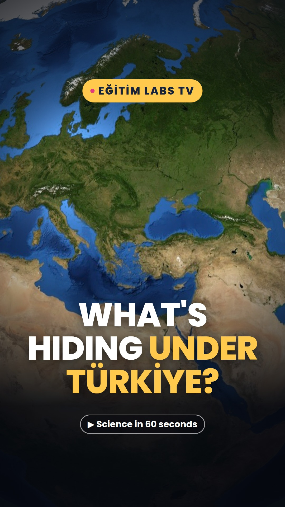

70.57 sn · 9:16 · ses: Gemini Algieba · Türkçe altyazı videoya gömülü
🇹🇷 73% of the world's boron, 40% of its natural stone, and a Black Sea full of gas. What's under Türkiye? 👇 Dünyanın borunun %73'ü, doğal taşının %40'ı ve gaz dolu bir Karadeniz. Türkiye'nin altında neler var? Follow @egitimlabs.official for more · Daha fazlası için takip et #Türkiye #Turkey #DidYouKnow #Boron #Science #EğitimLabsTV
What's Hidden Under Türkiye? 🇹🇷 #shorts
